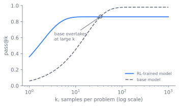
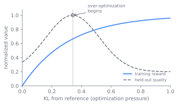

训练模型推理
这里要讲的强化学习，奖励是可核查的真值，而不是一个习得的人类偏好代理。有了可核查的真值，事情会变得很不一样，而读者读完本章都能答上这几个问题：在存在验证器的任务上，验证器为何胜过奖励模型；GRPO 与 RLOO 如何丢掉 PPO 一直背着的评论者；o1 与 R1 一脉为何能在没有步级监督的情况下产出长程推理；以及在「是否真的教会了任何新推理」这一点上，领域内为何至今仍有分歧。
贯穿每一节的，是一个单一的对象：验证器。它存在之处，本章的配方适用；它不存在之处，就只能退回到 第 10 章 的习得奖励模型。一旦这个对象被固定，就请留意每一项设计选择各自付出了什么代价。
一个无法钻空子的奖励
从激发这一切的失效讲起。习得的奖励模型是一个代理，而针对代理训练的策略会去找它的 argmax，而非真实目标的 argmax。这正是困扰 第 10 章 中 RLHF 的过度优化问题 (Schulman et al. 2017)：在一个人类偏好模型上压得足够狠，策略学到的便是满足那个模型，而非满足人。奖励模型没有真值来锚定它，于是它的盲区就变成了策略的可乘之机。
对于一大类有价值的任务，存在一条出路，因为答案可以被核查。一段程序要么通过它的单元测试，要么不通过。一个数学答案要么等于参考答案，要么不等。一个形式化证明要么在 Lean 中通过类型检查，要么不通过。在这些任务上，就可以用一个验证器取代习得的奖励，针对一个不存在可被钻空子的代理缺口的奖励来优化策略。这一步，即可验证奖励的强化学习（RLVR），正是本章所负责的内容 (Lambert et al. 2024)，它也是智能体运行框架在推理时所跑的那个运行时验证回路在训练阶段的对应物。
把代理换成核查器
端到端的回路很短。为一个提示采样若干补全，把每条补全送过一个验证器以获得标量奖励，这个奖励往往就是二元的，再朝着获奖的补全更新策略。训练数据是带有核查答案手段的提示，而非带有参考补全的提示。优化器是 第 10 章 的 PPO 机制原封不动地复用 (Schulman et al. 2017)：一个策略、一个优势估计，以及一项对冻结的参考模型的 KL 惩罚。创新之处在于奖励来源，而不在算法。
flowchart LR P["带可核查答案的提示"] --> S["采样 G 条补全"] S --> V["验证器：测试、核查器、证明"] V --> R["每条补全的标量奖励"] R --> A["组相对优势"] A --> U["带 KL 锚定的策略更新"] U --> S
这个回路下游的一切，都取决于中间那个框里的核查器有多好。下一节就把它打开。
三类验证器
验证器正是买不到的那一部分，它分为三类，成本与覆盖面各不相同。用于代码的可执行单元测试廉价且信号强，但覆盖面有限，一个通过了测试却实则错误的解，照样会得到奖励。用于数学的答案核查器归结为字符串、数值或符号等价，难的工程在于解析与等价判定，而非核查本身。Lean 或 Isabelle 一类的形式化证明检查器几乎无法伪造，却范围狭窄、编写成本高昂。每一类都在覆盖面与完整性之间权衡，而这一取舍正是本章反复出现的主题。图 14.2 把这三类放到那条轴上。
强化学习配方的形态，由下层是否存在验证器所决定。答案可核查处，便得到一个不可被钻空子的奖励，本章的回路适用。不可核查处，就只能退回到 第 10 章 的习得奖励模型，并继承它的过度优化。这正是前沿推理工作集中于数学、代码与形式化证明的原因：在数据层是否有一个真值可用，而非在训练层是否有一个偏好，才是决定能运行哪种算法的东西。验证器的覆盖面才是真正的预算。
丢掉评论者
奖励来源一旦固定，优化器便得到一处真正的简化。PPO 背着一个价值网络，即评论者（critic），用于估计那个降低优势方差的基线，而这个网络使模型显存翻倍，并引入它自身的失效模式。组相对策略优化（Group Relative Policy Optimization），为 DeepSeekMath 提出 (Shao et al. 2024)，丢掉评论者，转而从为一个提示采出的样本组中估计优势：把每个奖励相对组内均值与标准差做归一化。对于一组 条补全、奖励为 ，
在同一个奖励向量上算出两种基线，看它们在哪里不同，以及一个无离散度的组对各自意味着什么。
import numpy as np
def grpo_adv(r):
s = r.std()
if s == 0: # all pass or all fail: no spread, no signal
return np.zeros_like(r)
return (r - r.mean()) / s
def rloo_adv(r): # baseline = mean of the other G-1 samples
G = len(r)
return r - (r.sum() - r) / (G - 1)
for name, r in [("mixed ", np.array([1., 0., 1., 0.])),
("all pass", np.array([1., 1., 1., 1.]))]:
print(f"{name} rewards={r.tolist()}")
print(f" GRPO advantage = {np.round(grpo_adv(r), 3).tolist()}")
print(f" RLOO advantage = {np.round(rloo_adv(r), 3).tolist()}")
它比带评论者的 PPO 更廉价，且恰好契合 RLVR，因为当每条补全都廉价可验证时，每个提示采多个样本就很自然。对参考模型的 KL 项保留。RLOO，即 REINFORCE 留一法（Leave-One-Out），用一个不同的基线做同样的押注 (Ahmadian et al. 2024)：每个样本的基线是组内其余样本的平均奖励。GRPO 与 RLOO 在偏差与方差的取舍上不同，但它们在一个结构性主张上一致：评论者往往是不必要的额外开销。图 14.3 展示了这三种方法各自从何处获取那个把奖励变成优势的基线。
flowchart TB
subgraph PPO["PPO"]
direction TB
p1["每个样本的奖励"] --> p2["评论者网络估计基线"]
p2 --> p3["优势 = 奖励减评论者"]
end
subgraph GRPO["GRPO"]
direction TB
g1["一组 G 条的奖励"] --> g2["基线 = 组内均值，按组内标准差缩放"]
g2 --> g3["在组内归一化的优势"]
end
subgraph RLOO["RLOO"]
direction TB
r1["一组 G 条的奖励"] --> r2["基线 = 其余 G 减 1 条的均值"]
r2 --> r3["优势 = 奖励减留一法均值"]
end
PPO -. "丢掉评论者" .-> GRPO这个回路产出了什么：o1 与 R1
改变了整个领域的结果是：这个回路，在数学与代码上、允许长链思维地跑起来，可在没有任何步级监督的情况下产出涌现的长程推理。自我核查、回溯，以及更长时间的斟酌，都从一个仅结果的奖励中冒了出来。OpenAI 的 o1 宣告了这一能力 (OpenAI 2024)。DeepSeek-R1 则是展示了这套配方的公开数据点 (Guo et al. 2025)。
R1 值得当作两个变体来读，因为这一对照正是其中的教益 (Guo et al. 2025)。R1-Zero 把强化学习直接施于一个基座模型，没有监督冷启动，而推理行为依然涌现，这是那个更强的主张。R1 在强化学习之前加了一段简短的 SFT 冷启动，借用了 第 9 章 的监督微调，不是为了教推理，而是为了修复可读性与稳定性：zero 变体的推理虽正确却难以阅读，且易出现语言混杂。冷启动是一段修饰性、起稳定作用的前缀，推理增益来自强化学习。图 14.4 对照了这两条流水线。
flowchart LR B["基座模型"] --> RL1["在数学与代码上的 RLVR"] RL1 --> Z["R1-Zero：推理涌现，难以阅读，语言混杂"] B --> CS["简短 SFT 冷启动：可读性与稳定性"] CS --> RL2["在数学与代码上的 RLVR"] RL2 --> R["R1：同样的推理增益，输出可读"]
完整发布的 R1 不止是在强化学习前贴上一个冷启动。整体来看，它是一条四阶段的流水线：一小批冷启动 SFT 数据用于修复可读性，第一段面向推理的强化学习，一轮只保留已验证为正确的轨迹并掺入通用 SFT 数据的拒绝采样，再是一段跨推理与通用偏好一起跑的最终强化学习 (Guo et al. 2025)。zero 变体的奖励是基于规则且复合的，一个核查答案的准确率奖励，加上一个要求链式思维落在 <think> 与 </think> 标签之间的格式奖励；R1 又加了一个语言一致性奖励，即链中以目标语言书写的比例，以制止 zero 变体的语言混杂，代价是原始准确率的一点可测下降 (Guo et al. 2025)。
R1 报告的两条死路，和它的成功一样有教益 (Guo et al. 2025)。过程奖励模型试过又被弃：在开放推理里定义一个细粒度的正确步骤很难，逐步判定本身就易错，而习得的 PRM 招来了 第 10 章 的奖励黑客，所换来的收益不足以抵消其开销。在词元流上做蒙特卡洛树搜索（MCTS）也试过又被弃，因为词元生成所开的搜索空间比棋类游戏指数级地更大，而它所需的步级价值模型很难训练。胜出的信号是朴素的结果奖励，而非更密、更巧的那个。另一条教训关乎奖励给谁：把 R1 的轨迹蒸馏进一个更小的稠密模型，胜过在那个小模型上直接跑同样的强化学习，DeepSeek-R1-Distill-Qwen-32B 被报告高于 DeepSeek-R1-Zero-Qwen-32B，于是把推理装进小模型最廉价的办法，是让一个大模型把它找出来再复制结果，这条线由 第 12 章 接续。
RLVR 究竟是灌输了新的推理，还是只放大了基座模型已经知道的东西，尚无定论。放大派认为，可验证奖励的强化学习是在锐化基座模型已经赋予概率质量的分布：它通过把概率集中到基座模型本就能采样到的推理路径上来提升 pass@1，而且有研究报告称，基座模型在大 处的 pass@k 可以追平甚至超过经强化学习训练的模型，这意味着强化学习是在引出与重新加权，而非在教。灌输派则指向 R1-Zero，那里回溯与自我纠错这类行为在训练过程中频率与长度都在增长，看起来像习得，而非仅仅重新加权 (Guo et al. 2025)。这一分歧部分关乎度量，因为 pass@k、采样温度以及基座模型的强度都会左右判决，而它之所以仍然鲜活，是因为双方都能指向真实的训练。把「RLVR 教会推理」这样的主张当作取决于基座模型与度量指标的，而非已成定论的。图 14.5 勾勒出放大派所依凭的那处交叉。

信用给多少，多久给一次
监督这个问题有它自己的脉络，它是横切于验证器三类之上的第二条轴。结果奖励只为最终答案打分，廉价，是 RLVR 的默认做法，但对一条长链的信用分配较粗。过程奖励经由过程奖励模型（PRM）为每一步打分，Lightman 等人在 "Let's Verify Step by Step" 中训练了它 (Lightman et al. 2023)，Uesato 等人更早将其与结果反馈做了比较 (Uesato et al. 2022)。PRM 给出更密集的信用，有助于长程学习，但它重新引入了验证器所移除的那个东西：一个习得的、可被黑的奖励。R1 时代的意外之处，在于一个仅结果的信号在完全没有过程模型的情况下走出了多远。
精炼组基线
GRPO 发布了推理模型，而 R1 之后的一年，被用来找出它的组基线偏在何处并加以修正。最锐利的解读来自 Liu et al. (2025)，它指出更新中的两个偏置。一个长度偏置，因为按词元的 归一化，会让一个正确的短答案得到比正确的长答案更大的梯度，并且对一个错误的长答案比错误的短答案惩罚得更轻，于是策略朝着更长的错误输出漂移。还有一个难度偏置，因为把优势除以组的标准差，会上调那些几乎全对或全错、即离散度最小的问题的权重。去掉 与标准差两项即可消除两者，并恢复无偏的 PPO 目标，以更少的词元达到同样的推理，这正是作者称其为「GRPO 做对了」的缘由。
另外两个修正针对另一种失效，即策略坍缩到少数几个高奖励模式上、其熵急剧下跌。DAPO (Yu et al. 2025) 把裁剪范围解耦，让上界能够单独抬升，即它的 clip-higher 规则，从而给低概率的探索性词元留出生长空间，而非把它们裁掉；它还加入动态采样，丢弃那些整组全对或全错的提示，因为一个没有离散度的组既产生不了优势也产生不了梯度，正是上面那段可运行代码所揭示的死局。GSPO (Zheng et al. 2025) 出自 Qwen 团队，把重要性比从词元移到序列：它在整条序列的似然上打分、裁剪与优化，而非用按词元的比，后者它认为与一个定义在整条序列上的奖励并不匹配，而这一改动稳住了混合专家模型本就脆弱的强化学习。KL 项也失去了它在 第 10 章 中的那种必要性：有了验证器，就没有可供漂入的习得代理，而 DAPO 丢弃了 RLHF 当作缰绳的 KL 惩罚，转而依靠 clip-higher 来防止熵坍缩。
它在哪里失效，又在哪里得到回报
配方是一组平衡，每个都有一个拐点。把这些读作验证器固定之后所拨动的旋钮。
- 可验证奖励，还是习得奖励。 验证器在代理的意义上难以被钻空子，但只存在于真值可核查之处，而它的覆盖面正是新的攻击面。第 10 章 的习得奖励模型可用于开放式任务，却是一个可被过度优化的代理。真实的配方会按领域把两者混用 (Lambert et al. 2024)。
- 结果监督，还是过程监督。 结果奖励廉价、稳健且稀疏。经由 PRM 的过程奖励密集、对长程信用分配更好，但 PRM 是一个习得的、可被黑的奖励，且标注成本高 (Uesato et al. 2022)。这是信号密度与奖励完整性之间的取舍。
- 有评论者，还是无评论者。 价值网络降低了优势的方差，却使模型显存翻倍并引入它自身的失效模式。GRPO 与 RLOO 以方差换取简洁，并契合 RLVR 多样本的形态 (Shao et al. 2024)。
- 探索，还是 KL 崩溃。 KL 太小，或优化太激进，会让策略坍缩到少数几个高奖励模式上并停止探索，于是奖励上升而留出质量下降。KL 太大则策略永远离不开参考模型。KL 系数与裁剪范围是 RLVR 的核心旋钮。图 14.6 勾勒出那个拐点：训练奖励持续上升，而留出质量掉头向下。

- 验证器覆盖面，还是可被钻空子程度。 更严格、更宽广的验证器能抵抗钻空子，但成本更高，且可能拒绝正确但不寻常的答案，即让学习挨饿的假阴性。宽松的验证器廉价，却会把奖励泄漏给错误答案。
这里的多数失效，都是优化器找到了所度量的东西，而非所意指的东西。经由验证器漏洞的奖励黑客（reward hacking）是其中核心：策略发现一些被验证器判为正确、实则不然的输入，在退化解上通过的测试、被格式骗过的核查器、对已知用例硬编码的输出。对优化器而言奖励是真实的，对人而言答案却是错误的。KL 崩溃或模式崩溃是其次：策略集中到少数几个高奖励输出上，熵急剧下跌，训练奖励攀升而留出质量退化。钻核查器空子而非解决问题的推理是其中微妙的一种，即可见的链式思维朝着验证器所奖励的任何东西引导，或根本不忠实地驱动答案。
两条边界给这个方法划了界。RLVR 在真值可核查之处最强，并不会免费迁移到开放式任务上，因此过度倚重它会令模型偏斜，并留下一道只有习得奖励或人类判断才能填补的缺口。2025 年把这套配方往那条边界之外拉伸的尝试，是用一份明确的评分量表（rubric）取代核查器，按一份写下来的标准清单、而非单一真值来为一个开放式答案打分，从而在没有验证器之处恢复出一个比偏好更密集的信号 (Gunjal and others 2025)。它以那个曾让验证器安全的性质为代价换来了触及范围，因为一份量表本身就是一个可被钻空子的书面代理。而过度压榨奖励会使后训练中装入的指令遵循、安全性与广度发生回退，这是一种灾难性遗忘，此处的 KL 锚定只能部分预防，而 第 30 章 必须将其捕获。
自我改进回路是验证器可靠时的回报。用模型生成候选训练数据，经验证器过滤以只保留已验证为正确的轨迹，再把它们喂入又一轮 SFT 或强化学习，如此迭代。这与 第 12 章 的蒸馏不同，因为这里的过滤器是一个核查器，而非更强的教师，于是模型能自举越过它当前的自身。硬性限制在于它需要一个可验证的信号才能闭合回路：可靠的验证器给出真正的自举，不可靠的则放大其自身的盲区。大规模运行喂养这一切的采样与 rollout 集群，第 8 章 会专门展开，而「花更多算力以推理得更好」在推理时的对应物，留到 第 15 章 再谈。
把同一个回路从奖励一个答案扩展到奖励一整条轨迹，训练一个模型去行动、而不只是去推理，是 第 16 章 的主题。
延伸阅读
- Shao et al., “DeepSeekMath: Pushing the Limits of Mathematical Reasoning in Open Language Models” (introduces GRPO), 2024. arXiv:2402.03300
- Guo et al., “DeepSeek-R1: Incentivizing Reasoning Capability in LLMs via Reinforcement Learning” (peer-reviewed version: Nature (2025), DOI 10.1038/s41586-025-09422-z), 2025. arXiv:2501.12948
- Liu et al., “Understanding R1-Zero-Like Training: A Critical Perspective” (Dr. GRPO; names GRPO's length and difficulty biases), 2025. arXiv:2503.20783
- Yu et al., “DAPO: An Open-Source LLM Reinforcement Learning System at Scale” (clip-higher and dynamic sampling), 2025. arXiv:2503.14476
- Zheng et al., “Group Sequence Policy Optimization” (sequence-level importance ratio; stabilizes MoE RL), 2025. arXiv:2507.18071
- Schulman et al., “Proximal Policy Optimization Algorithms” (PPO; introduced in 第 10 章, reused here), 2017. arXiv:1707.06347
- Lightman et al., “Let's Verify Step by Step” (process reward models / PRMs), 2023. arXiv:2305.20050
- Uesato et al., “Solving Math Word Problems with Process- and Outcome-Based Feedback” (process vs outcome supervision), 2022. arXiv:2211.14275
- Ahmadian et al., “Back to Basics: Revisiting REINFORCE-Style Optimization for Learning from Human Feedback in LLMs” (RLOO), 2024. arXiv:2402.14740
- OpenAI, “Learning to Reason with LLMs” (the o1 line; an official announcement / system report, not a peer-reviewed paper), 2024. openai.com
- Lambert et al., “Tulu 3: Pushing Frontiers in Open Language Model Post-Training” (names/positions RLVR), 2024. arXiv:2411.15124
- Gunjal & others, “Rubrics as Rewards: Reinforcement Learning Beyond Verifiable Domains” (rubric-based rewards extend RLVR-style training into non-verifiable domains), 2025. arXiv:2507.17746